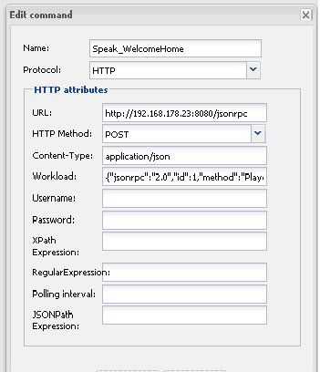

Forums : Make XBMC Speak from OpenRemote
This page last changed on Oct 04, 2013 by puthplaza.
Hello,
Here's a simple way to make your XMBC speak from OpenRemote.

Modify the url to your xbmc.
This is the full workload:
{"jsonrpc":"2.0","id":1,"method":"Player.Open","params":{"item":{"file":"http://translate.google.com/translate_tts?tl=nl&q=Hallo%20Michel.%20Leuk%20je%20weer%20te%20zien"}}}
note: tl=nl. This is dutch. Modify it to your language.
You can also start a stream this way.
{"jsonrpc":"2.0","id":1,"method":"Player.Open","params":{"item":{"file":"mms://81.23.251.55/ArrowAudio02?MSWMExt=.asf"}}}
{kind=link}
|
Hey, Very nice tip! Thanks for sharing it. – Juha |
|
I don't see the "content type" field in the designer. Am I missing something? |
|
It's on the staging version of the designer. |
|
Hi Chris, Try https://composer.openremote.org/preview – Juha |
|
Thanks Juha! I had seen this mentioned on other comments, saying that this was planned to be rolled into the production designer about a year ago. I also read that once I use the staging version I am locked into it as using the production designer afterward could corrupt data. Is this still the case? |